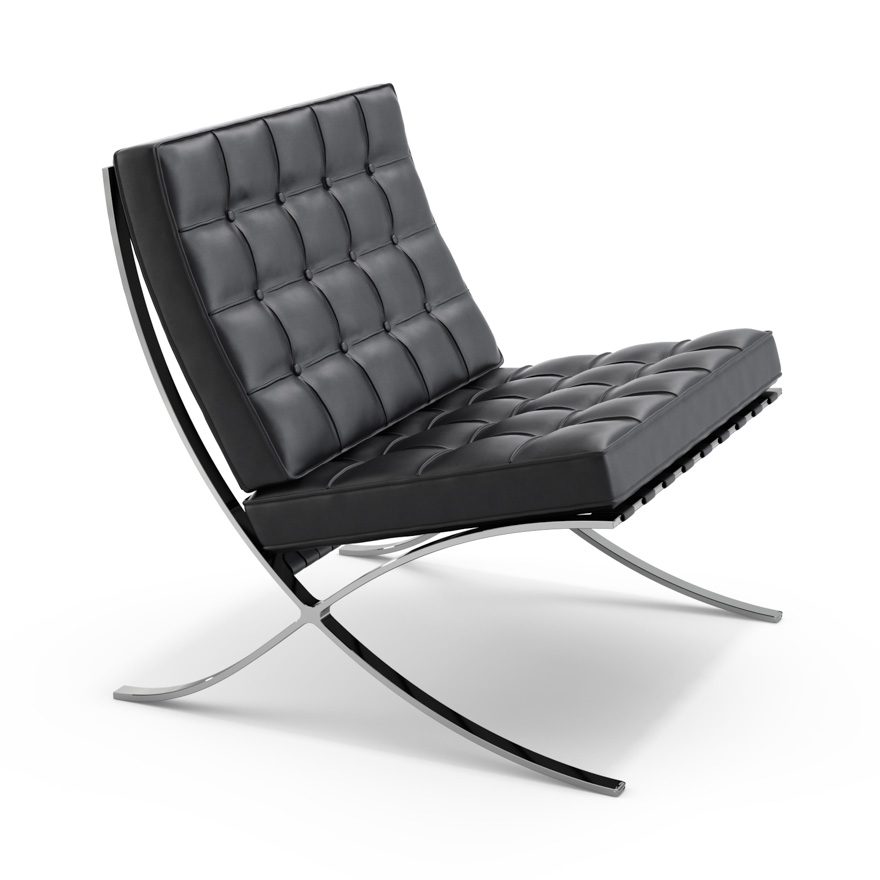
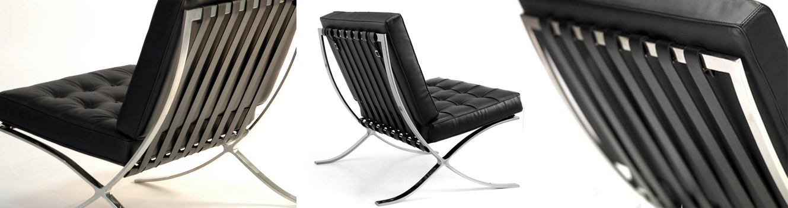
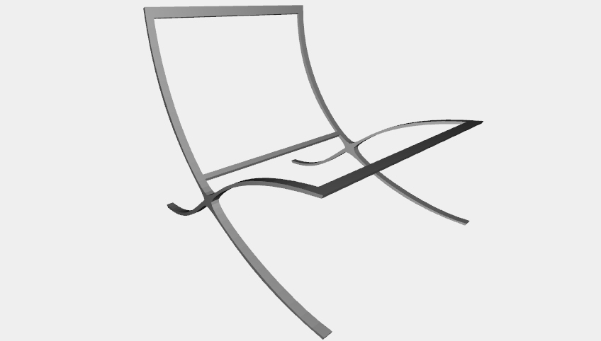
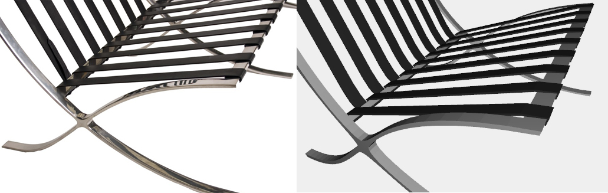
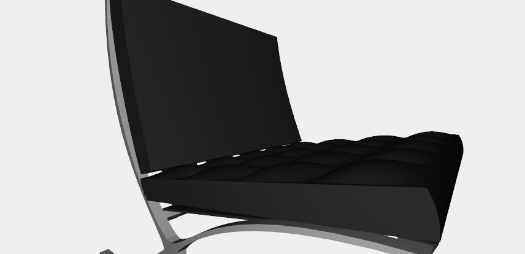
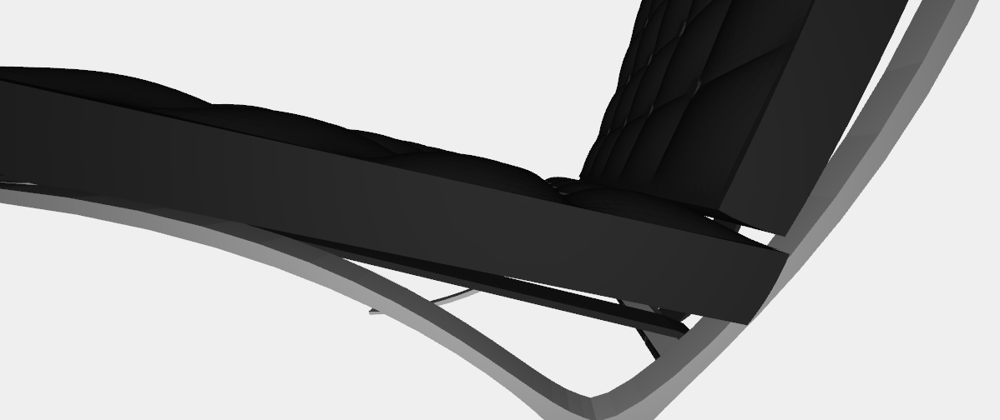
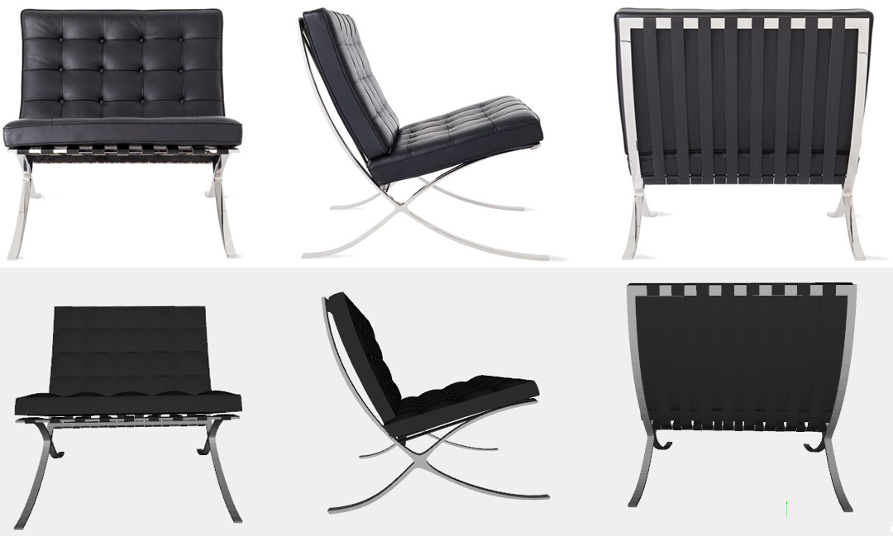
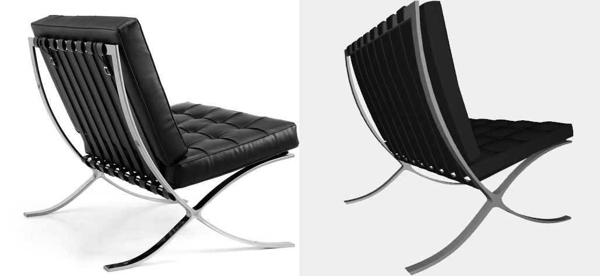

Barcelona Chair
Description
As a rising figure of the modernist movement, Ludwig Mies van der Rohe was selected to design the Weimar Republic’s Pavilion for the Barcelona Industrial Exposition of 1929. Through masterful proportioning and planning, Mies created a rhythmic and entirely unprecedented space, which elevated industrial-age materials to a level of grace never before achieved. Inside, Mies included chairs and stools conceived as a resting place for the King and Queen of Spain. Determined to create a chair worthy of royalty, Mies is thought to have based the designs, with their signature crisscross frames, on the campaign chairs of Ancient Rome.
“I feel that it must be possible to harmonize the old and new in our civilization.”
Legs
The model can be created starting from the skeleton of the chair: the legs. Every edge of the chair is drawn by a sequence of points: 18 points are necessaries to draw all the edges of the chair. Then the function bs2() Bezier-map all the combination between the edges to create the surfaces the define the skeleton. SIMPLICIAL_COMPLEX has been used to fill the empty between the legs curve surfaces.
Ropes
Broken lines are necessary to build up the ropes where will be placed the bottom pillow. Four sequences of points can individuate the four sides edges of a singular rope; NUBS(S0)(1)(knots)(points) can be used to create a broken line from these points - grade = 1 because we need a broken line = grade 1. After the definition of the edges we can create the surfaces between them thanks to bs2() or just Bezier-mapping on S1 two edges at time. Once one rope is generated, the function REPLICA(9) let us create the sequence of ropes properly translated. The same technique can be used for the 8 ropes on the back of the chair. All the ropes are then structed and colored of black.
Pillows
The rounded sides surfaces of the pillows has been created Bezier-mapping through bs3() the two sequences of points that draw the upper and bottom edge of each side and the middle sequence of points that has been approximated by the function. Then, the upper and bottom surface have been created passing the points of two opposites edges as parameters through bs2(). The stuffed square on the top of the pillows are created Bezier-mapping three sequences of points: two for the edges and the middle one that will be approximated, again through bs3(). Then the stuffed square is replicated in the two dimensions to fill the pillow surface.
Details
The pillow buttons are simplest CYLINDER(0.04, 0.01)([12, 1]), replicated and translated properly between the stuffed squares.
Complete model
Legs, ropes, pillows and buttons are structed the last two coloured with the array passed through the call to the function. The result of the function barcelona_chair() is a perfect Plasm.js 3D model of the Mies van der Rohe's Barcelona Chair.
 Sources: knoll.com